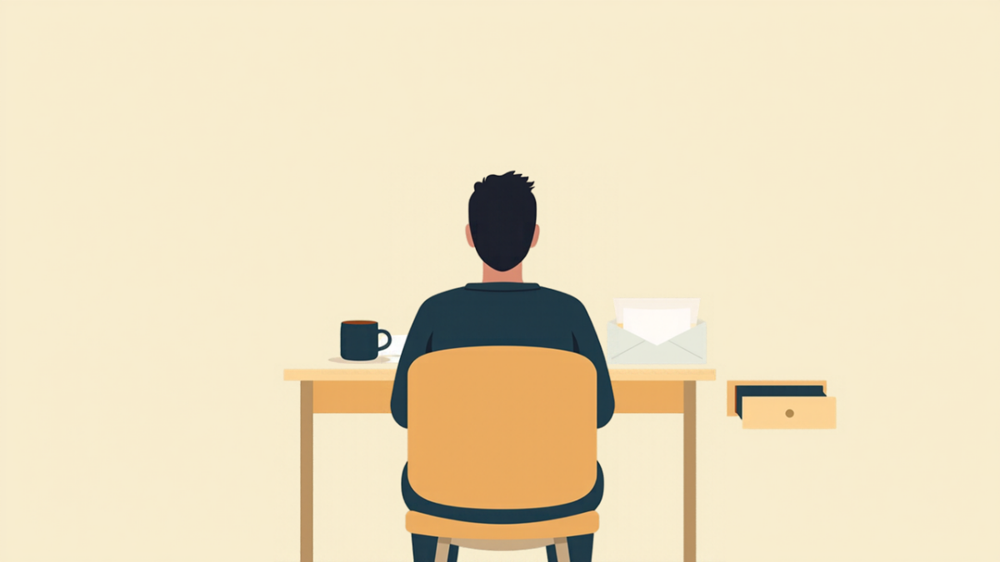
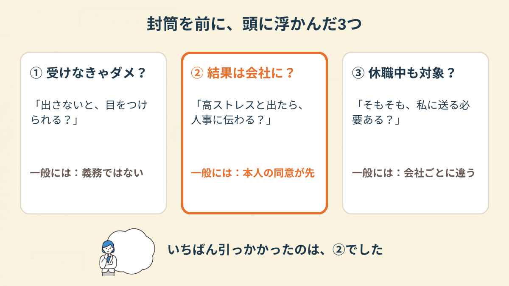
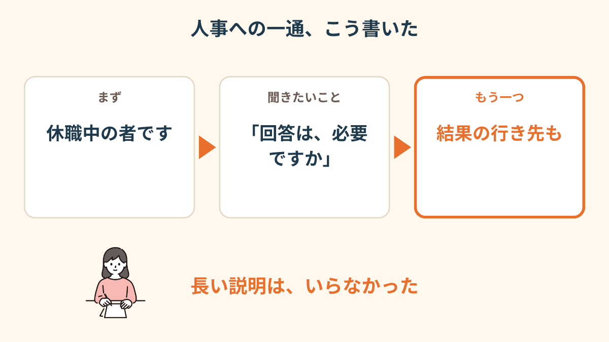
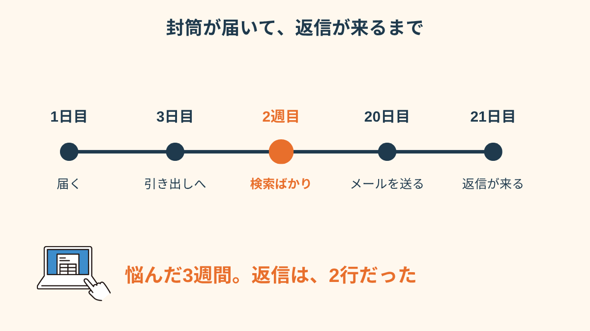
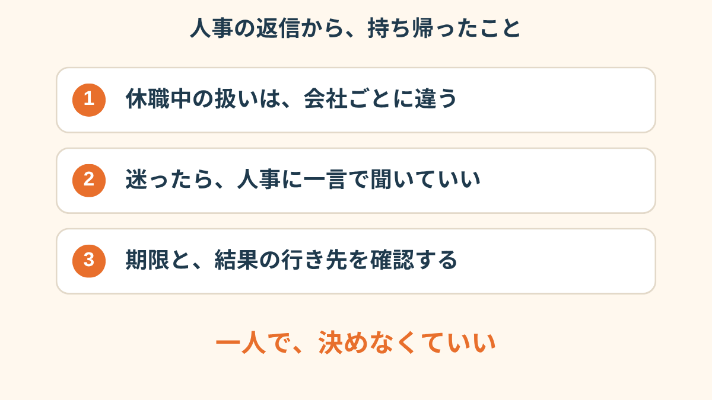
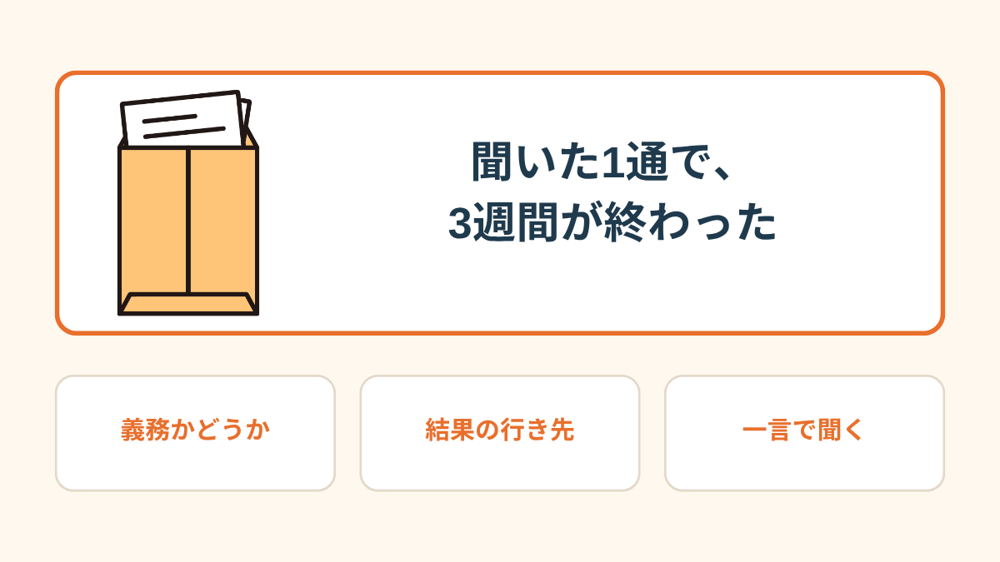
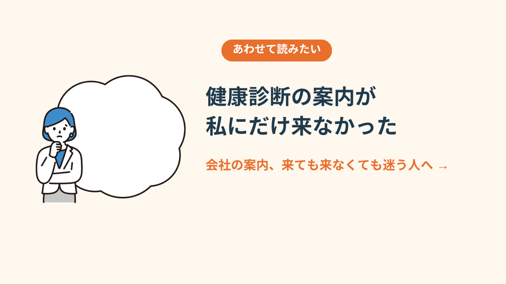

「ストレスチェック実施のお知らせ。回答期限は11月30日です」
人事部から届いた茶封筒には、そう書いてあった。
休職して4ヶ月目の11月。私は封を切ったあと、紙を元に戻して、机の端に置いた。
PR


机の端に置いた、茶封筒
郵便受けで差出人の「人事部」の文字を見た瞬間、胃がきゅっとなった。休職中は、会社から来る封筒が全部こわい。傷病手当金の書類か、復職の話か、それとも。
開けてみたら、中身はIDとパスワードが印刷された紙と、回答用のURL、それから期限。
ストレスで休んでいる人間に、いま、ストレスを測らせるの？
最初に出た感想はそれだった。受けたほうがいいのか、受けなくていいのか。誰にも聞けないまま、封筒は1日目から机の端にあった。

会社からの案内は、中身を知る前が一番こわいことがあります。開けたあとで「思っていたのと違った」と感じる方も、いるようです。まめざる

机の端に置いたまま、3日たった
「封筒を見るだけで、会社の人の顔が浮かんで。中身が何かより、『私のところにも来るんだ』ってことのほうがきつかったです」
30代・女性（適応障害で休職・事務職）
「高ストレス」と出たら、会社に伝わる気がして
3日目に、封筒は引き出しへ入った。2週目は、スマホで検索ばかりしていた。「休職中 ストレスチェック 受けなきゃ」。出てくる記事は、どれも在職中の人向けで、休職中の自分には当てはまるのかが分からない。
頭の中にあったのは、結局この3つだった。

封筒を前に、頭に浮かんだ3つ
調べて分かったのは、一般には、受けるかどうかは本人の自由で、結果も本人の同意なしには会社へ渡らないという仕組みになっている、ということだった。休職中の人を対象外にしている会社もあるらしい。ただ、「らしい」の先は、会社によって違う。
i
ここに書いたのは一般的な目安で、私の会社の場合の話です。実際の扱いは会社ごとに違うので、案内が届いたら人事や総務に確認してください。（2026年11月時点の情報です）
「受けなくていいって知っても、『受けなかったら休職してるのに協力しない人って思われる？』って、別の心配が出てきました。自分でもめんどくさいなって思います」
20代・男性（うつ病で休職・営業職）
相談の一コマ

相談者
高ストレスって出たら、人事に伝わっちゃうんじゃないかって、それが一番こわくて。
まめざる
伝わる、というのは、どんなふうに伝わるイメージでしょうか。
相談者
『あの人、まだ元気じゃないんだ』って、復職の話に響く気がして。
まめざる
復職に響くかもしれない、という心配が先にあるんですね。そこを人事に聞いてみる、という手もあります。
人事に、2行だけ送った
20日目の夜、メールの下書きを開いた。最初は長く書こうとして、事情の説明から入って、3回消した。
最後に残ったのは、2行だけ。

人事への一通、こう書いた
「休職中の○○です。ストレスチェックの案内をいただきましたが、休職中も回答は必要でしょうか。回答する場合、結果は誰が見ることになりますか」
送信ボタンを押したあと、スマホを伏せて、台所で水を飲んだ。たった2行なのに、手が少し冷たかった。

悩んだ3週間。返信は、2行だった
返信は、拍子抜けするほど短かった
翌朝、返事が来ていた。
「ご連絡ありがとうございます。休職中の方は今回の対象外ですので、回答は不要です。ご体調を優先してお過ごしください」
読んで、肩の力が抜けた。同時に、ちょっとだけ、さみしかった。対象外という言葉が、会社の中に自分の席がもうないみたいに聞こえたからだ。人事はたぶん、そんなつもりで書いていない。
3週間、封筒を引き出しに入れて、検索して、夜中に文面を消して。かかった時間は、返信を読む10秒だった。
「私も、聞いたら一言で終わりました。聞くまでの時間のほうが、ずっとしんどかったです」
40代・女性（適応障害で休職・メーカー勤務）

人事の返信から、持ち帰ったこと
i
「いまの自分の気持ちが、どの辺りにあるのか分からない」というときは、2問で答えられる
気持ちスキャン診断もあります。よかったら覗いてみてください。

聞いた1通で、3週間が終わった

健康診断の案内が、私にだけ来なかった話 →
!
この記事は、実際にあった複数の話を組み合わせて書いたものです。ストレスチェックの扱いは、会社の規模や運用によって違います。最終的には、会社の人事・総務や主治医、必要なら専門機関にご確認ください（2026年11月時点の情報です）。
Q. 休職中でもストレスチェックは受けないといけませんか？
一般に、受検は労働者の義務ではないとされ、受けなくても不利益な扱いをされないことになっています。また、実施期間中ずっと休職している人を対象外にできるとされていますが、扱いは会社ごとに違います。案内が届いたら、人事や総務に確認するのが確実です（2026年11月時点の情報です）。
Q. ストレスチェックの結果は、会社に知られますか？
一般には、結果は本人の同意がないまま会社に提供されない仕組みとされています。同意するかどうかは自分で決められます。社内でどう扱われるかは、案内の書面や人事への確認で確かめてみてください（2026年11月時点の情報です）。
Q. 「高ストレス」と出たら、どうなりますか？
高ストレスと判定された場合、医師の面接指導を希望できる仕組みがあります。申し出るかどうかは本人の意思です。休職中で主治医がいる場合は、主治医にも相談してみてください。
Q. 人事に聞くとき、どう書けばいいですか？
決まった書き方はありません。休職中であること、回答が必要かどうか、結果の行き先の2点だけを短く書く方もいます。メールが負担なら、電話や、家族に代わりに連絡してもらう方法もあります。体調が重いときは、無理をせず主治医にも相談してください。
PR


まずは無料で相談してみる
会社への聞き方も、うまく説明できなくて大丈夫です。一緒に整理していきましょう。
無料相談はこちら
この記事に、聞いてみたいことはありますか？
「自分の場合はどうなんだろう」と思ったことを、気軽に書いてみてください。いただいた質問は個別にお返事したうえで、匿名で記事にすることがあります。
お
おのざる
mimemime代表。就労支援の現場経験をもとに、障がいのある方の働く不安に寄り添う記事を執筆。